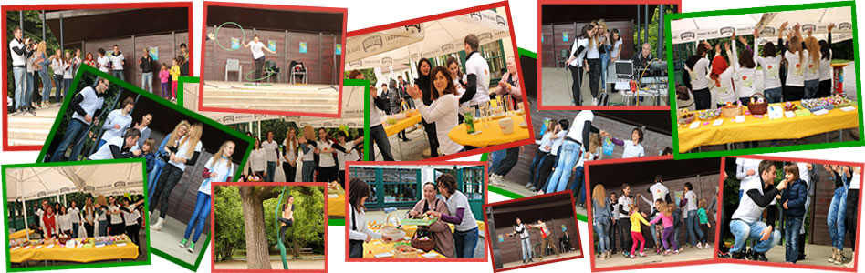

Izjava na Peticiji, koja se potpisuje na sve tri aktivnosti, glasi:
Smatram da nastava Tjelesne i zdravstvene kulture treba omogućiti i izbor alternativnih sportova ( žongliranje, ples na svili, ples, joga, pilates, samoobrana)

HODOGRAM
(subota,17.05.2014.godine u 11.00)
park Maksimir, velika metalna pozornica na kraju aleje
| Vrijeme: | Raspored: |
|---|---|
| 11:00-11:15 | Uvodna riječ: Ivan Vujanić i Iva Šterle, voditelji programa Predstavljanje zdravih slastica i početak degustacije |
| 11:15-11:45 | Udruga "Razbribriga" prezentacija aktivnosti |
| 11:45-12:00 | Akrobatski rock'n'roll"BUBA" plesna točka |
| 12:00-12:15 | Predstavljanje projekta "Oj, budi zdrav!" Paula Piskać, Antonija Bukvić-Letica,Nera Lengel,učenice nositeljice projekta |
| 12:15-12:30 | StepbyStep kratka plesna točka |
| 12:30-12:45 | "Zuzana-škola orijentalnog trbušnog plesa" plesna točka |
| 12:45-13:00 | Nikolina Komljenović ples na svili |
| 13:00-13:15 | Predstavljanje AMPEU i programa "Mladi na djelu" i"Erasmus plus" predstavnik AMPEU |
| 13:15-13:30 | Hodanje po slicklineu Ivo Frangeš |
| 13:30-13:45 | Predstavljanje rezultata ankete "Zdrava prehrana,tjelesni odgoj i slobodne aktivnosti" provedene u Trećoj ekonomskoj školi voditelji programa |